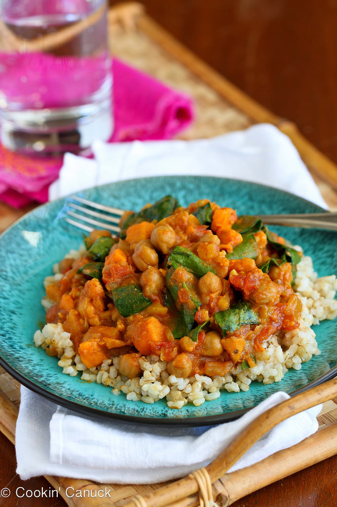

SLOW COOKER GARBANZO BEAN AND SWEET POTATO CURRY RECIPE
This slow cooker vegetarian curry recipe stars sweet potato
and chickpeas, and is a fantastic choice for a Meatless Monday meal.

| Prep time |
Cook time |
Total time |
| 15 min |
6 hours 15 min |
6 hours 30 min |
Ingredients:
- 1 tsp canola oil
- ½ medium onion, diced
- 1 Gala apple, diced
- 2 tbsp minced ginger
- 2 garlic cloves, minced
- ¼ cup mild curry paste (such as Patak's)
- 1 sweet potato, peeled and cut into ½-inch dice (about 2 cups)
- 2 cups small cauliflower florets
- 2½ cups low-sodium chickpeas
- 1 (14 oz.) can petite diced tomatoes
- 1 (14 oz.) low-sodium vegetable broth
- ½ tsp ground pepper
- ¼ tsp salt
- ½ cup lite coconut milk
- 1½ cups (lightly packed) spinach leaves, chopped
Instructions:
- Heat the canola oil in a large nonstick skillet set over medium
heat. Add the onion, apple and ginger, and cook until they are tender,
7 to 8 minutes.
- Add the garlic and cook for 30 seconds. Stir in the curry paste
and cook, stirring, for 3 minutes.
- Transfer the onion mixture to a slow cooker.
- Add the sweet potato, cauliflower, chickpeas, diced tomatoes
and vegetable broth to the slow cooker.
- Cook on HIGH for 6 hours, or until the vegetables are tender.
- Stir in the coconut milk and spinach, and heat. Serve.
Nutrition Facts:
| Serving Size |
1 cup |
| Calories |
181 |
| Total Fat |
5.1g |
| Saturated Fat |
1.0g |
| Carbohydrates |
31.6g |
| Dietary Fiber |
4g |
| Sugar |
4.7g |
| Protein |
3g |